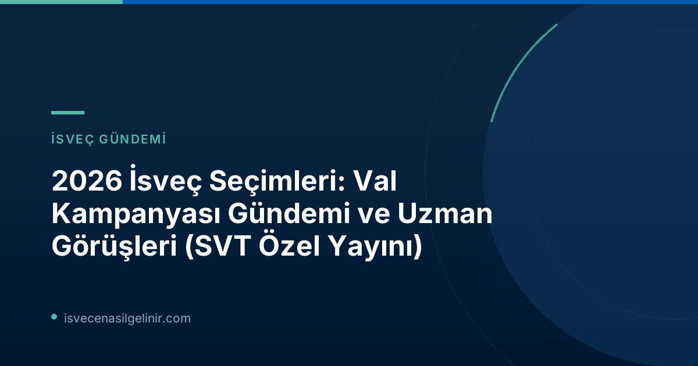

Val kampanyası, partiler arasındaki rekabeti ve potansiyel koalisyon senaryolarını gün yüzüne çıkarıyor. Seçmenlerin ve siyaset takipçilerinin zihnindeki temel sorulara SVT politik muhabirleri Skoglund ve Lindvall, samimi ve bilgilendirici yanıtlar verdi.
2026 İsveç Seçimleri: Val Kampanyası Gündemi ve Uzman Görüşleri
SVT Politik Muhabirleri Soruları Yanıtlıyor
Canlı sohbet sırasında ele alınan bazı önemli başlıklar ve muhabirlerin değerlendirmeleri şu şekildedir:
1. Potansiyel Koalisyon Senaryoları
Seçim sonuçlarının ardından hükümet kurma süreçleri İsveç siyasetinin en karmaşık aşamalarından birini oluşturuyor. Muhabirlere yöneltilen sorular arasında, S (Sosyal Demokratlar) partisinin C (Merkez Partisi) ve KD (Hristiyan Demokratlar) ile bir hükümet kurma olasılığı da vardı. Karolina Skoglund'un yanıtına göre, Sosyal Demokratlar, SD (İsveç Demokratları) hariç çoğu partiyle iş birliğine açık olabilirken, başbakanlık koltuğunu bırakma niyetinde değiller. Ayrıca, eğer L (Liberaller) %4'lük seçim barajını aşamazsa, C partisinin Tidö (M, KD, L, SD ortaklığı) iş birliğine yönelip yönelmeyeceği de merak konusu oldu. Skoglund, Tidö’nün SD ile iş birliği yaptığı sürece C'nin böyle bir yönelimin pek olası görmediğini belirtti.
2. Talmanlık Pozisyonu ve Meclis Başkanı Seçimi
İsveç Parlamentosu'nun (Riksdag) ‘Talman’ı (Meclis Başkanı) önemli bir siyasi pozisyondur. Pontus adlı bir katılımcının Norlén'in seçim sonrası Talman olarak kalma ihtimaline dair sorusuna Julia Lindvall, kızıl-yeşil bir çoğunluğun oluşması halinde, talmanlık pozisyonunun büyük ihtimalle değişeceğini belirtti. Meclis Başkanlığı'nın partiler için prestijli bir görev olması nedeniyle, kızıl-yeşil bir hükümetin kendi adayını bu göreve getireceği neredeyse kesindir.
3. Seçmen Katılımı ve Düşük İlgi Riski
Tommy adlı bir katılımcının val kampanyasının 'sönük' geçmesi nedeniyle seçmen katılımının düşüp düşmeyeceği yönündeki endişesine Lindvall, bu durumun gözlemlenmesi gereken ilginç bir nokta olduğunu ifade etti. Önceki genel seçimlerde katılımda hafif bir düşüş yaşansa da, oran hala yüksek seviyelerdeydi. Lindvall, seçmen katılımını artırmak için ne gibi adımlar atılabileceği konusunda sorular yöneltti.
4. Hükümet Kurma Süreci: 2018'den Daha Kısa Mı Olacak?
Mathias'ın 2018'deki 134 günlük rekor hükümet kurma sürecinin bu seçimlerde de tekrarlanıp tekrarlanmayacağı sorusuna Karolina Skoglund, sürecin daha kısa olacağını düşündüğünü belirtti. Tidö blokunun kazanması durumunda, zaten üzerinde anlaşmaya varılmış bir hükümet yapısı olduğu için sürecin hızlı ilerleyeceği öngörülüyor. Kızıl-yeşil blokun kazanması durumunda ise biraz daha uzun sürebileceği, ancak 134 gün gibi ekstrem bir sürenin beklenmediği ifade edildi. İsveç vatandaşlık süreçleri ve gereklilikleri hakkında detaylı bilgi edinmek için sverigemedborgarskapsprov.com adresini ziyaret edebilirsiniz.
5. Riksdag Barajı Tartışması ve Siyasi Temsil
Andreas adlı bir katılımcının, İsveç Parlamentosu için uygulanan seçim barajının yükseltilmesi gerektiği yönündeki sorusu, özellikle siyasi temsil ve küçük partilerin meclise girme şansları açısından önem taşıyor. Muhabir Skoglund, bu tür bir değişikliğin Riksdag'daki parti sayısını azaltarak politik muhabirlerin işini bir nebze kolaylaştırabileceğini esprili bir dille ifade etti ve katılımcıya kaç partinin ideal olacağını sordu. Mevcut durumda, İsveç'te parliamentary barajı %4'tür.
| Konu | Mevcut Durum / Beklenti |
|---|---|
| Seçim Barajı | %4 (Riksdag için) |
| 2018 Hükümet Kurma Süresi | 134 Gün (Rekor) |
| 2026 Hükümet Kurma Süresi Beklentisi | Daha Kısa (Özellikle Tidö kazanırsa) |
6. SVT-Verian Val Araştırmalarında "Köken" Gruplandırması
Sebastian adlı bir kullanıcının, SVT-Verian'ın val anketlerinde "köken" bilgisinin neden bir gruplandırma olarak yer almadığı sorusu, demografik analizlerin siyasetteki önemini vurguluyor. Julia Lindvall, seçim öncesinde belirli seçmen gruplarına odaklanan yayınlar planladıklarını, ancak "köken" gibi bir bilginin istatistiksel olarak güvenilir bir şekilde ayrılıp ayrılamayacağından emin olmadığını belirtti. Cinsiyet ve yaş gibi bilgilerin anketlerde mevcut olduğu bilgisini paylaştı.
Önemli Not: Partiler Arası İş Birlikleri
Fredde'nin S, C ve M'nin neden bloklar halinde devam etmek yerine bir araya gelip bir hükümet kurmadığı yönündeki sorusuna Julia Lindvall, bu partilerin birçok konuda farklı düşüncelere sahip olmasının yanı sıra, böyle bir iş birliğinin SD'nin (İsveç Demokratları) güçlenmesine hizmet edeceğini düşündüklerini ifade etti. Bu durum, İsveç siyasetindeki bloklaşmanın ve SD'ye karşı duyulan genel çekincenin altını çizmektedir.
SVT Nyheter Inrikes'in bu canlı yayını, 2026 İsveç seçimleri öncesinde seçmenlerin ve kamuoyunun kafasındaki birçok soruyu aydınlatmaya yardımcı oldu. Kampanyanın ilerleyen dönemlerinde benzer etkinliklerin devam edeceği de müjdelendi. İsveç'teki siyasi gelişmeler, göçmenlik ve vatandaşlık süreçleriyle ilgili en güncel bilgilere ulaşmak için sitemizi takip etmeye devam edin.
Referanslar
- SVT Nyheter Inrikes - ChattValrörelsen trappas upp – vad undrar du?SVT:s politikreportrar svarar
- sverigemedborgarskapsprov.com
İsveç Vatandaşlığı ve Göçmenlik Hakkında Daha Fazla Bilgi Edin
2026 İsveç seçimleri ve İsveç'te yaşamla ilgili tüm sorularınız için isvecenasilgelinir.com rehberliğini keşfedin. Güncel mevzuat, vatandaşlık süreçleri ve İsveç'e uyum hakkında kapsamlı bilgiler sizi bekliyor.